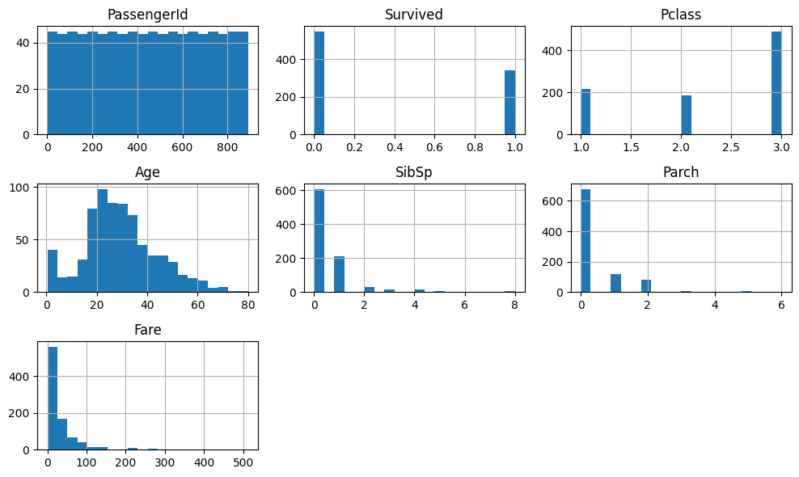
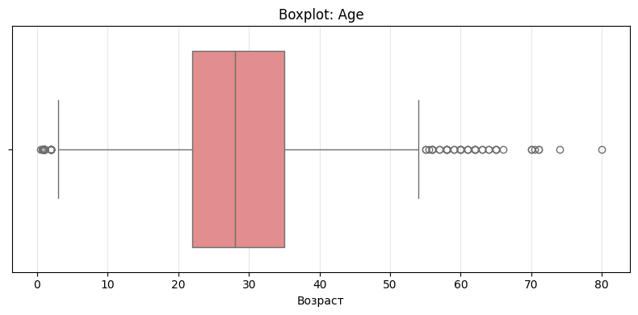
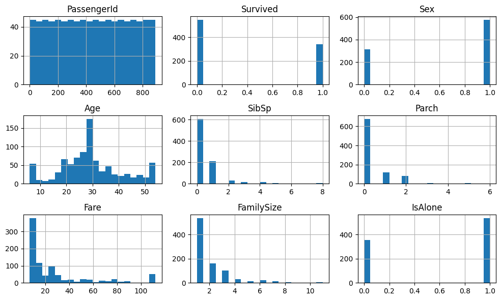
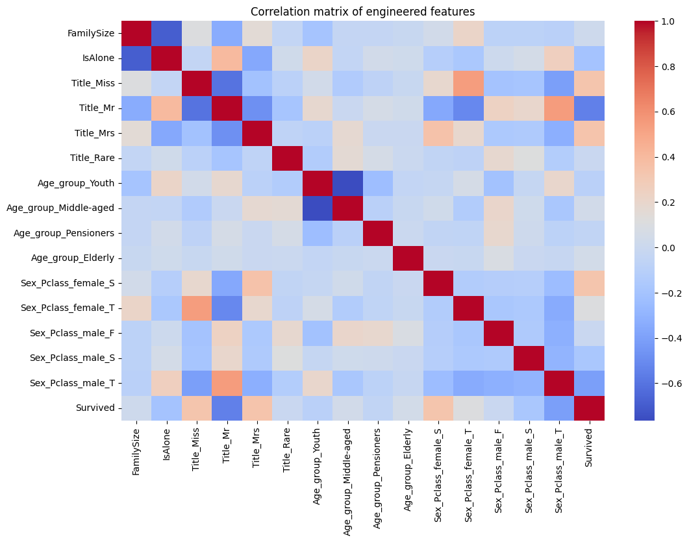

Лабораторная работа №6
Ссылка на ipynb-board
Отчет
В рамках работы проведён полный цикл анализа данных: от первичного изучения датасета до очистки, трансформации и построения новых признаков. Основное внимание уделено обработке пропусков, выбросов и выявлению закономерностей, влияющих на целевую переменную.
Цель работы
Целью работы является:
- проведение первичного анализа данных;
- очистка данных от пропусков и выбросов;
- создание новых признаков;
- подготовка датасета для дальнейшего моделирования;
- выявление факторов, влияющих на выживаемость.
Описание набора данных
Датасет содержит информацию о пассажирах (аналогично Titanic):
- демографические признаки (Age, Sex);
- социально-экономические (Pclass);
- стоимость билета (Fare);
- порт посадки (Embarked);
- информация о семье (SibSp, Parch);
- целевая переменная:
Survived.
Первичный анализ
Статистика датафрейма
- Использованы методы: data.info() - типы данных, data.describe() — статистические характеристики Выявлены:
- числовые и категориальные признаки
- наличие пропусков

Визуализация пропусков
- Использовано:
python
data.isna().sum()
* Основные пропуски:
* Age
* Cabin (~77%)
* Embarked (небольшое количество)
Обработка пропусков
Методы заполнения
Embarked→ заполнение модойAge→ заполнение медианой по группамEmbarkedCabin→ удаление столбца (слишком много пропусков)
Результаты обработки
- Удалены столбцы с большим числом пропусков
- Основные признаки заполнены
- Датасет стал пригоден для анализа и моделирования
Трансформация данных
Созданные признаки
Age_group— возрастные категорииTitle— извлечён из имениFamilySize— размер семьиIsAlone— одиночный пассажирSex_Pclass— комбинация пола и класса
Преобразования типов
- Sex → числовой (0/1)
- Pclass → категориальный (F, S, T)
Обработка выбросов
Выявленные выбросы
- Анализ через:
- boxplot
- IQR-метод
Методы обработки
-
Winsorization:
-
Fare- обрезка по 5% и 95% Age- аналогично
Агрегация и анализ
Сводные статистики
- Средняя выживаемость по классам
- Группировка по
PclassиSex - Медианный возраст по
Embarked
Визуализации
Использованы: - гистограммы - boxplot - KDE-графики

Корреляционный анализ
- One-hot encoding новых признаков
- Построение корреляционной матрицы
encoded = pd.get_dummies(data[new_features])
corr_matrix = encoded.corr()

Заключение
Результаты работы
- Проведена полная очистка данных
- Устранены пропуски и выбросы
- Созданы информативные признаки
- Подготовлен финальный датасет (
new_train.csv)
Выводы
- На выживаемость сильно влияют: пол, класс, возраст, семейный статус
- Новые признаки (например,
Sex_Pclass) усиливают объясняющую способность модели - Обработка выбросов и пропусков критична для качества анализа